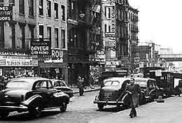
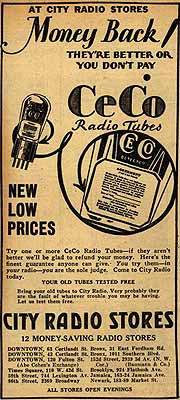

"Radio was a novelty. Most people were intimidated by it. You know,
the idea of information coming through the air, through the ether,
was something that was one step away from Black Magic. Within a
few years people regarded it as the greatest thing since flushed
toilets."
— Bill Schneck, son of Harry L. Schneck
who started the first radio store on Cortlandt St in 1921
| |
Radio Row, Cortlandt Street, Lower Manhattan,
New York, c.1960s
©Antique Radio Classified |
|
| |
| |
| Sound Samples |
|
1966 news broadcast on demolition |
|
sound
of Cortlandt Street, 1929
(from Fox MovieTone
newsreel) |
|
Stewart-Warner Ferrodyne tube
ad |
|
Columbia phonograph ad |
|
RCA-Victor radio ad |
|
Atwater-Kent radio ad |
|
|
|
This was the most unique street.
I played classical music; some of the others played jazz; some of
the others played different. It was a conglomeration you heard as
you walked along the street. It was really an experience.
—Irving Simon remembering Radio
Row
“When the port of New York authority first announced the
proposed construction of World Trade Center, the brochure quoted
from Walt Whitman, 'High growth of iron, splendidly uprising toward
clear skies.' To the Port Authority, the construction of the World
Trade Center might have meant growth. But to many of the 300 small
businessmen in the 13 blocks to be cleared for the center it meant
disaster.”
— Channel 2 News Archival news report
from the 1960s
 |
Cortland/Greenwich
ca. 1955
courtesy Antique Radio Classified |
"It wasn't just a street. It wasn't just some buildings.
It represented a way of life. All of that was incorporated into this
Radio Row. You know, I could wax poetic about it."
—Bill Schneck, son of a Radio Row
Store Owner
Legal Documents
» In 1965 the Port of New York Authority
sent an acquisition
notice to the occupents of Radio Row
» In the fall 1966 the Supreme Court of the United States
heard petitioners with a claim
against the Port of New York Authority
» A map
of the contested land was issued
» The Port Authority won the case and the occupents of Radio
Row recieved eviction
notices
Radio Broadcast
Produced by Ben Shapiro and Joe Richman / Radio
Diaries
Assistant Producer Elinoar Astrinsky
Special thanks to Jonathan Kern,
John Terry/Antique Radio Classified, Andy Lanset, Frank Yonkers,
Picture Projects,
Ed Schneck, Morton Brody, WCBS Reports (CBS/BBC Archives), Fox Movietone
Newsreel, and Benjamin Singleton from the University of South Carolina
News Film Archive.
|
Archival
advertisements
 |
| courtesy Hartman Center's Ad*Access, Digital
Scriptorium of the Rare Book, Manuscript, and Special Collections
Library, Duke University |
|